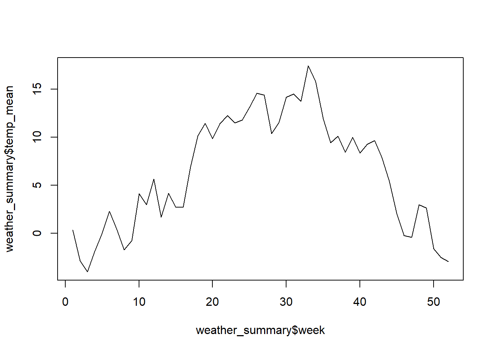
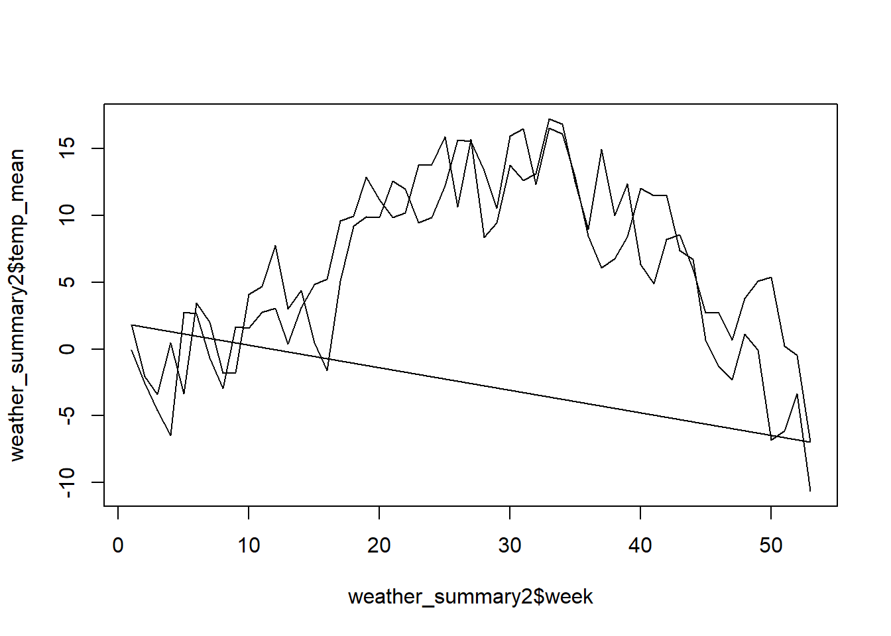

Sample Solution
library("readr")
sensors_long <- read_delim("datasets/prepro/sensors_long.csv", ",")You have a dataset, sensors_long.csv, with temperature values from three different sensors. Import it as a csv into R (as sensors_long).
Reformat the datetime column to POSIXct. Use the as.POSIXct function (read it in using?strftime()) to determine the specific format (the template).
library("readr")
sensors_long <- read_delim("datasets/prepro/sensors_long.csv", ",")Group sensors_long according to the column name where the sensor information is contained, using the function group_by, and calculate the average temperature for each sensor (summarise). Note: Both functions are part of the dplyr package.
The output will look like this:
library("dplyr")
sensors_long |>
group_by(name) |>
summarise(temp_mean = mean(value, na.rm = TRUE))
## # A tibble: 3 × 2
## name temp_mean
## <chr> <dbl>
## 1 sensor1 14.7
## 2 sensor2 12.0
## 3 sensor3 14.4Create a new convenience variable, month, for sensors_long (Tip: use the month function from lubridate). Now group by month and sensor and calculate the mean temperature.
library("lubridate")
sensors_long |>
mutate(month = month(Datetime)) |>
group_by(month, name) |>
summarise(temp_mean = mean(value, na.rm = TRUE))
## # A tibble: 6 × 3
## # Groups: month [2]
## month name temp_mean
## <dbl> <chr> <dbl>
## 1 10 sensor1 14.7
## 2 10 sensor2 12.7
## 3 10 sensor3 14.4
## 4 11 sensor1 NaN
## 5 11 sensor2 8.87
## 6 11 sensor3 NaNNow import the weather.csv dataset (source MeteoSwiss) with the correct column types (time as POSIXct, tre200h0 as double). You can download the file from moodle if you havent done so yet.
weather <- read_delim("datasets/prepro/weather.csv")
weather$time2 <- weather$time |>
as.character() |>
as.POSIXct(format = "%Y%m%d%H", tz = "UTC")
weather$time <- weather$time2
weather$time2 <- NULLNow create a convenience variable for the calendar week for each measurement (lubridate::isoweek). Then calculate the average temperature value for each calendar week.
weather_summary <- weather |>
mutate(week = isoweek(time)) |>
group_by(week) |>
summarise(
temp_mean = mean(tre200h0, na.rm = TRUE)
)Next, you can visualise the result using the following function:
plot(weather_summary$week, weather_summary$temp_mean, type = "l")
In the previous task, we calculated the average temperature per calendar week over all years (2000 and 2001). However, if we want to compare the years with each other, we have to create the year as an additional convenience variable and group it accordingly. Try this with the weather data and then visualise the output.
weather_summary2 <- weather |>
mutate(
week = week(time),
year = year(time)
) |>
group_by(year, week) |>
summarise(
temp_mean = mean(tre200h0, na.rm = TRUE)
)plot(weather_summary2$week, weather_summary2$temp_mean, type = "l")